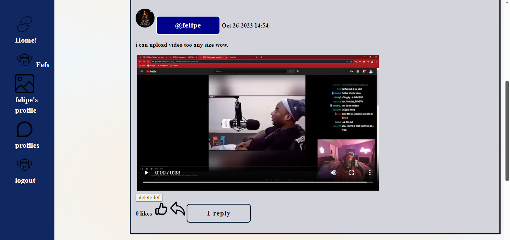
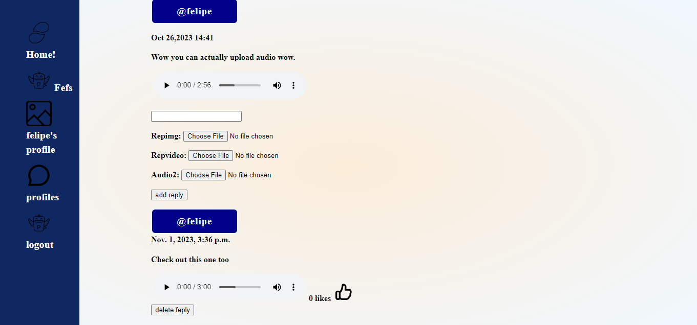
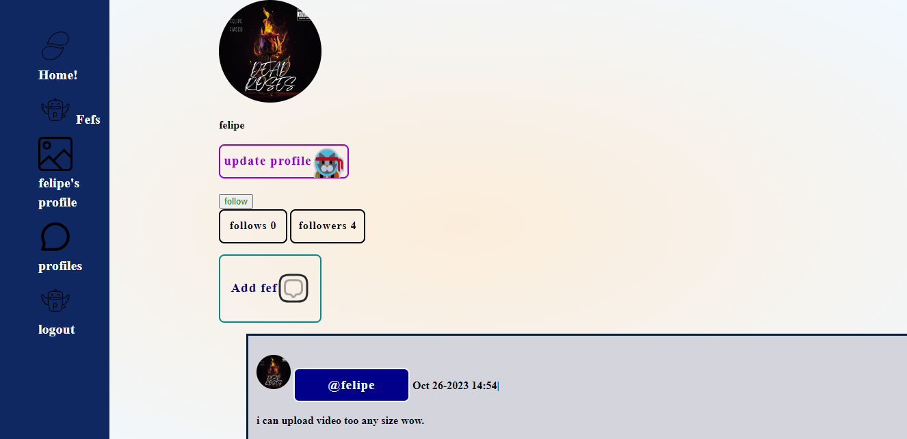
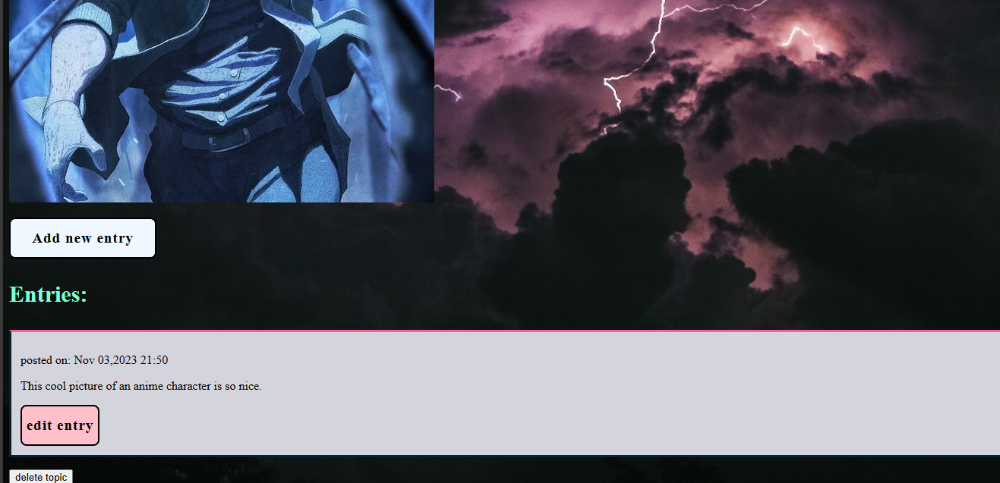

My projects.
FEFI! click for the source code
This is my biggest personal project so far took me a while to design, FEFI! yes the name is from.... of course you guessed it.
It's my second fullstack application. It's a social media app that allows users to share images, send fefs(not corny at all), video and the best part is of course sharing audio.
It's a social media app with anything you might need, users can upload videos of any duration (feel free to share those cooking tutorials especially biryani), you can follow/unfollow each other on the app, like posts and reply.
I have used django framework to design the backend and handle the database, i have used python to create methods for the logic , HTML and CSS for the frontend that is to make it more appealing and user friendly.
.png)
.png)
.png)



personal blog site click for the source code
This is my first fullstack application after its completion i took on a bigger more advanced project which is FEFI!, at first i thought it would be cool to create something that you can share art and talk about it.
So art as a topic which is an image then you discuss it or say what you think about it, not just text as a topic but now also image. You are able to make entries, edit, delete topics makemore entries and topics, have fun with it.
It's designed with django python for its efficient way of handling databases with ease, i used python still to write the logic. The interface is styled with HTML and CSS and some bootstrap.
.png)
.png)

A data visualization automation app click for source code
This is an app created with python , i have used maplotlib and numpy python libraries. So as you know reading csv files is hard especially for non-technical people, it's unfair sometimes since a csv file could carry important information about weather or a natural phenomena like earthquakes, so the app makes it easier to understand what is going on let's say the weather trend, non-technical people can understand easily because of the beautifully illustrated graphs generated by Matplotlib.
Music production, perfoming artist , video editing projects
If i'm not designing apps or learning programming i do make make music. It's a hobby of mine and i'm very passionate about it. I have worked on 4 tracks so far planning to do more hopefully in the future, i'm still looking to expand more on my music production knowledge visit my youtube channel.
Personal portfolio website
I have also created this simple portfolio website to highlight my projects, i have used html and css.